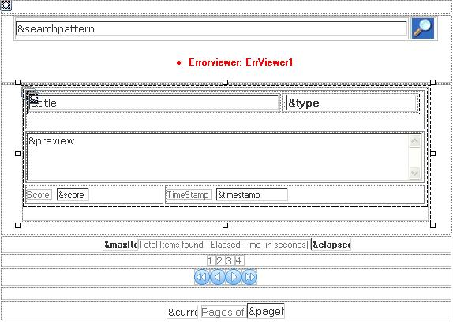
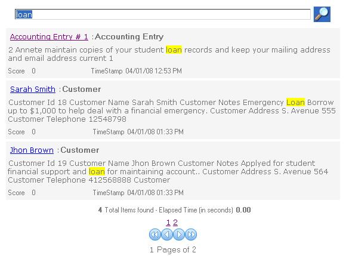
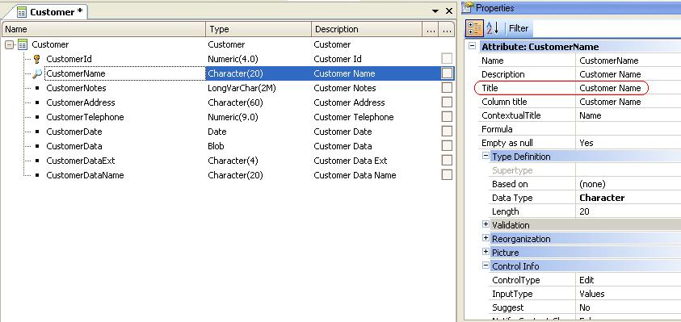
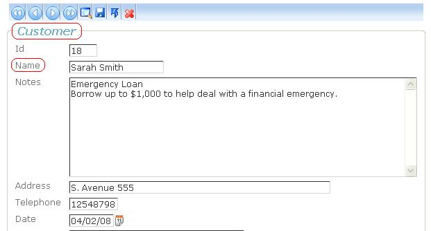
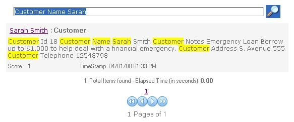

In this example we will introduce paging in the results of the query, and a way to show a preview of the search results highlighting the specific words in the search query. How to do it...Consider a BC transaction named "Customer" in the Knowledge Base, which is searchable (its Searchable property is set to TRUE). In addition, we have another type of information which will be searchable, as "Accounting Entries" are stored in the database or files. In order to program the "search" Web Panel object, define the following variables:
The form at design time is as follows:  This is the code that implements the search:
Sub 'Paging'
&SearchResult = TextSearch.Find(&searchpattern,&items,&pageNumber)
for &SearchResultItem in &SearchResult.Items()
&title = &searchResultItem.Title
&title.Link = &searchResultItem.Viewer
&type = &searchResultItem.Type
&score = &SearchResultItem.Score
&TimeStamp = &SearchResultItem.TimeStamp
if &type = 'Customer'
&customer.Load(&SearchResultItem)
&preview = TextSearch.HTMLPreview(&customer,&searchpattern,'HTML','<span STYLE="background: yellow"> ','</span>',200,1)
endif
grid1.Load()
endfor
EndSub
Note that based on the &Type (&searchResultItem.Type) value, we call the TextSearch.HTMLPreview function.  NoteTake into account that the text which is built and indexed has the following format: Attribute<1> Title + " " + Attribute<1> Value + .... Attribute<n> Title + " "+ Attribute<n> Value. As a consequence, in our example "Customer Name" and "Customer Address" will be present in the index followed by the corresponding values, as they are the "Titles" of CustomerName, CustomerAddress attributes, etc.  In addition, at runtime the user will see the "Contextual Title" as labels of each attribute.  So, if the user wants to find customers named Sarah, the search query could be "Customer name Sarah". That's because Customer is the name of the transaction, and "Name" is the contextual title the user is interested in searching for.  You can download the sample from here. See alsoFull-Text Search in Applications
|
| Backlinks | |
| Full Text Search example 3 | Full Text Search Examples |